Three directions made from the review of round one. They share one rule: the boldness goes on the world's light, and every piece of interface is flat. No shadow, bevel or gloss on any button, icon or window; no fabric, no poster shading, no rough paint, nothing taped on.
All three worlds stay in the family of the Toybox map from round one and add what the review asked for: rolling ground, a rockier Stonefield, and the same view at dawn, midday, golden hour and night with shadows that follow the sun and the moon. They differ in the finish of the world and in the kind of flat the interface is. Everything is a concept.
The world is the smooth toy diorama of the Toybox map from round one, now with rolling ground, a bouldery Stonefield and a sun and a moon that move. The interface is organic and solid: soft blob shapes in flat colour, a friendly rounded face, and not one shadow.
Open the board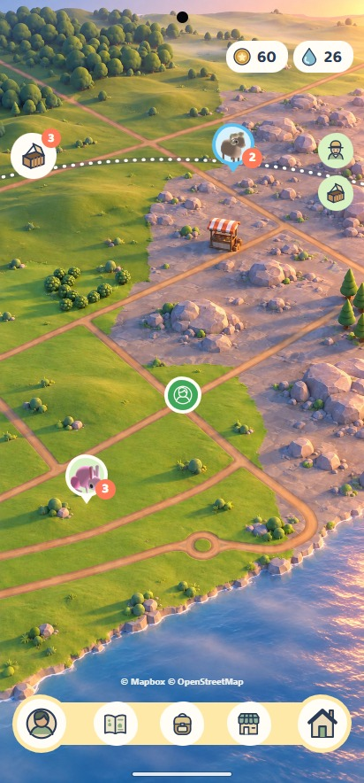
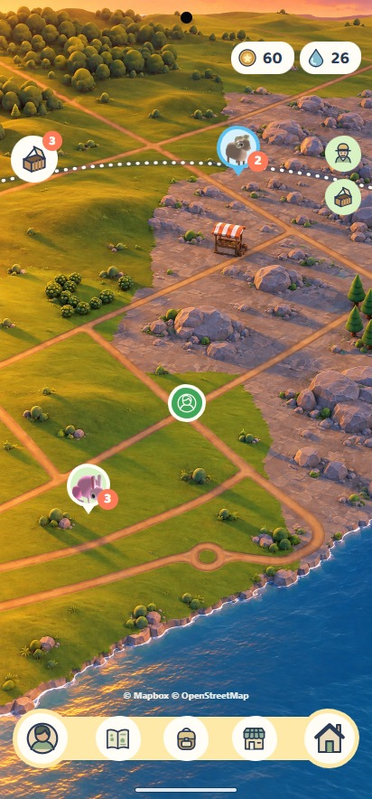
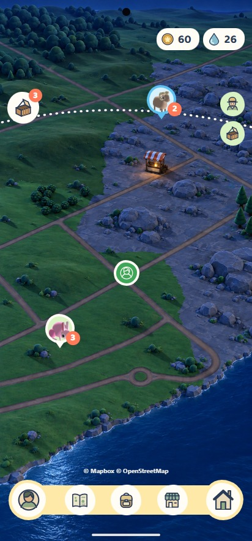
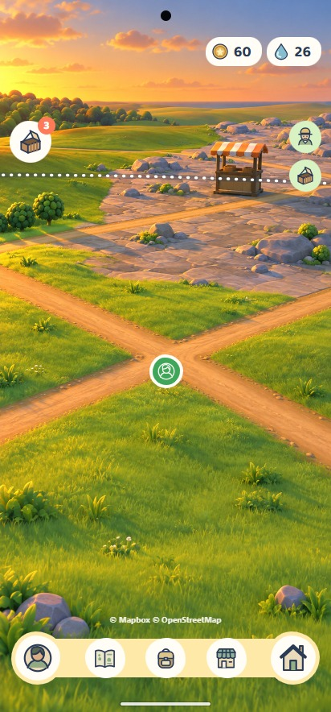
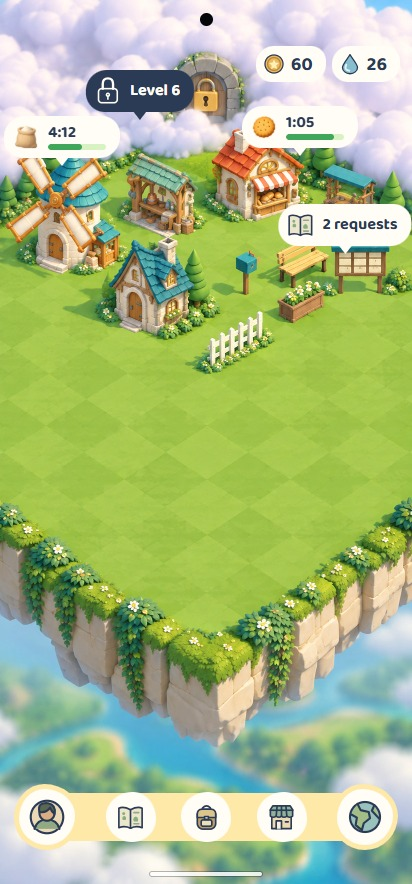
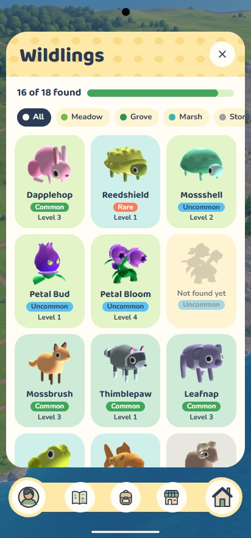
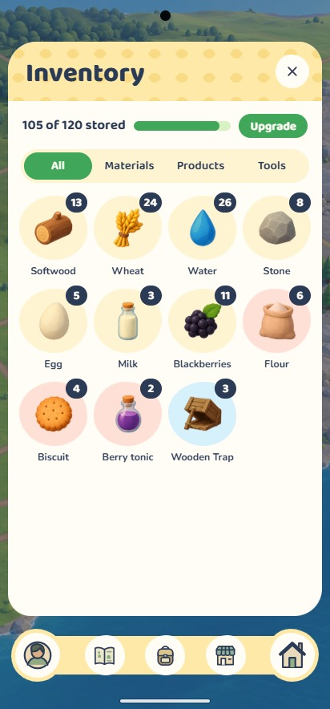
The world is a faceted low-poly relief model, built the way the game's creature meshes are built, so the creatures belong in it and every facet of the rolling ground catches the light. The interface is an atlas: chart-white sheets, one ink, hairline rules, contour lines, and rarity shown as altitude.
Open the board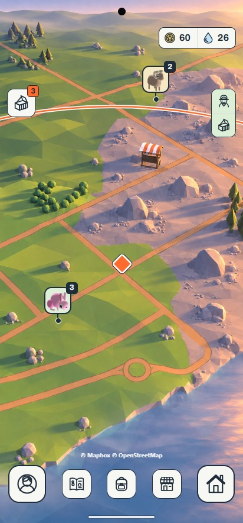
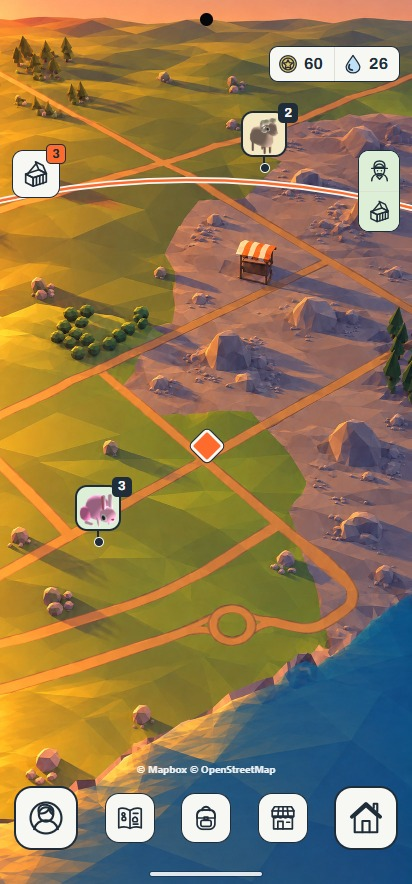
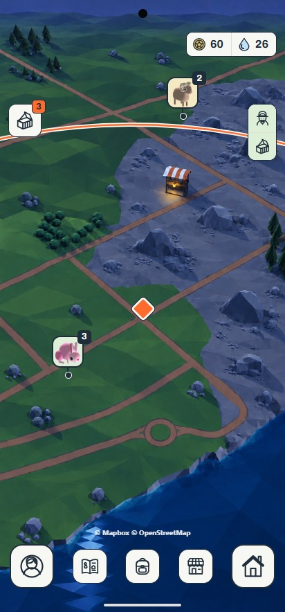
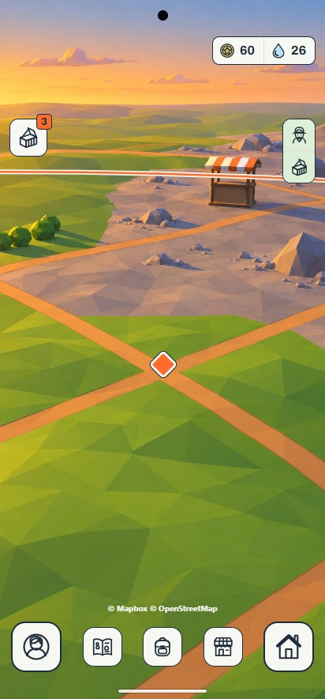
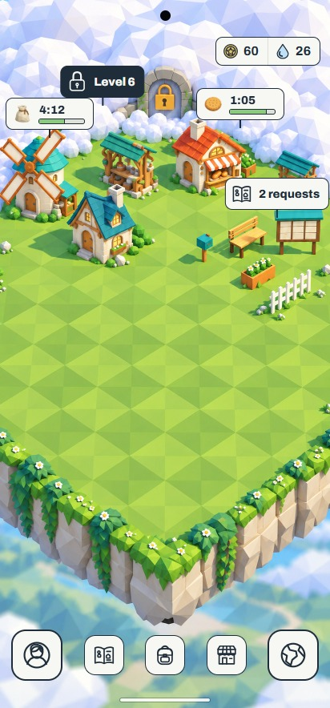
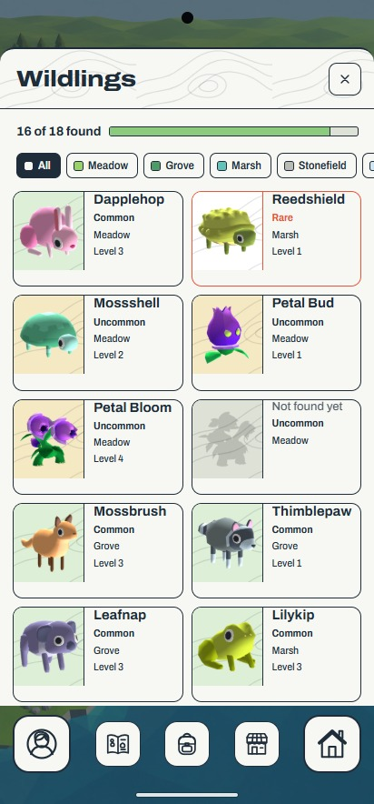
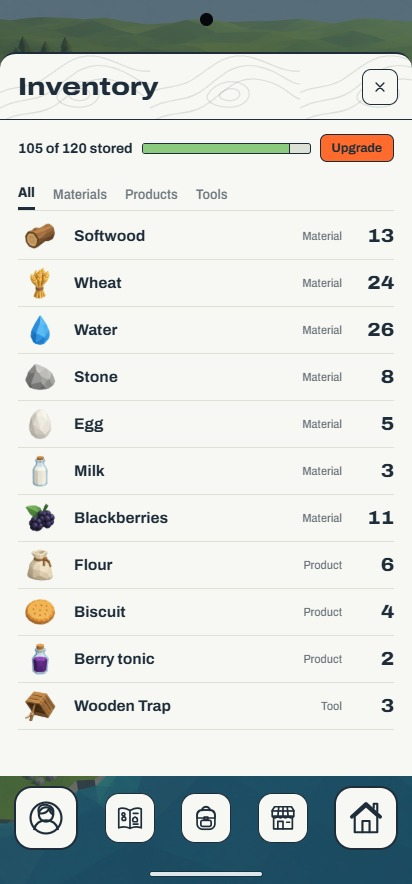
The world is the player's neighbourhood as a matte tabletop miniature, seen through a tilt-shift lens, under the most cinematic light of the round. So the interface gets out of its way and keeps time: it is only ever two colours, a paper and an ink, and both come from the hour.
Open the board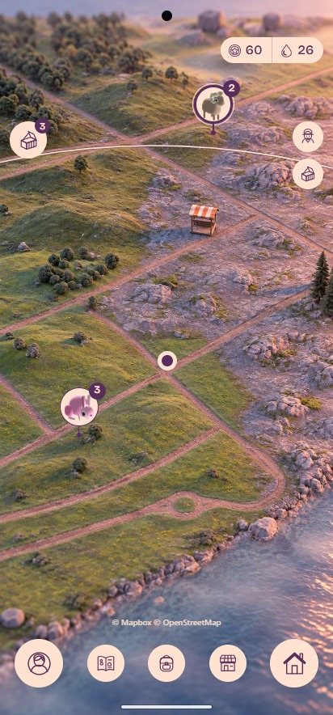
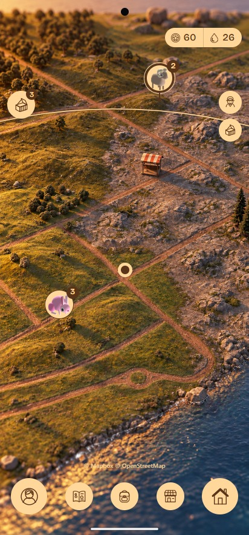
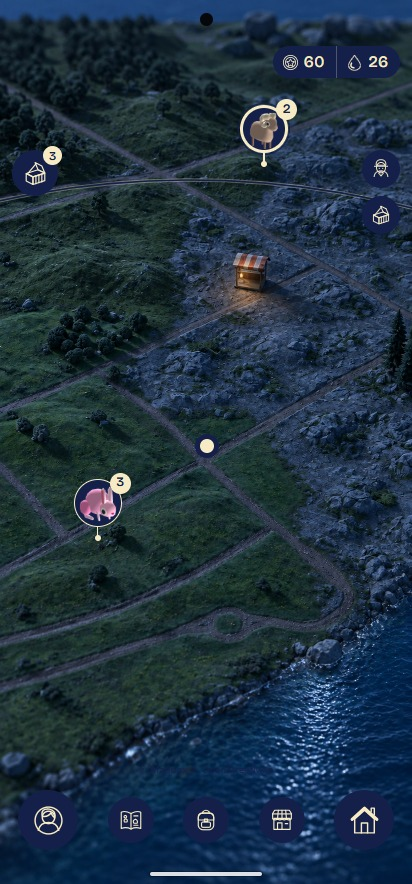
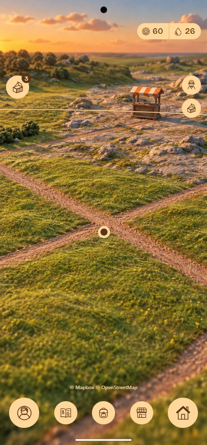
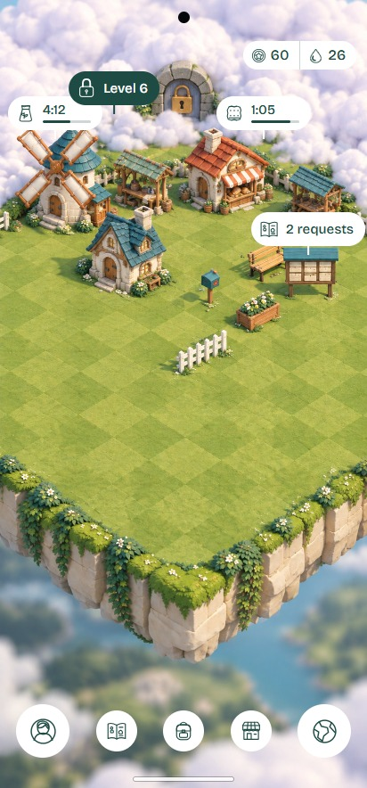
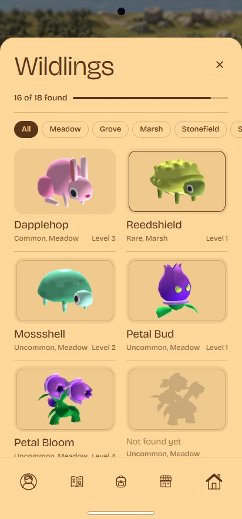
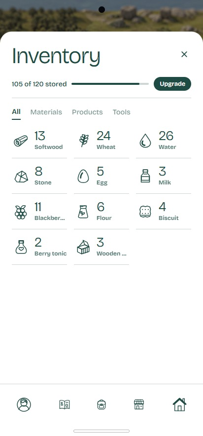